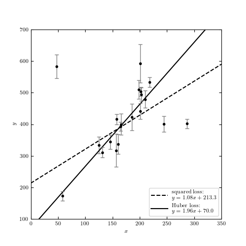

Huber Loss Function¶
This example shows how to perform robust regression using the Huber loss function.
Note that sklearn.linear_model.SGDRegressor has a Huber Loss Function built-in; here we will not use this, because it cannot account for heteroscedastic errors.
Optimization terminated successfully.
Current function value: 289.963723
Iterations: 62
Function evaluations: 117
Optimization terminated successfully.
Current function value: 43.439758
Iterations: 59
Function evaluations: 115
[ 1.07674745 213.27350923]
[ 1.96473118 70.00573832]
# Author: Jake VanderPlas <vanderplas@astro.washington.edu>
# License: BSD
# The figure produced by this code is published in the textbook
# "Statistics, Data Mining, and Machine Learning in Astronomy" (2013)
# For more information, see http://astroML.github.com
import numpy as np
from matplotlib import pyplot as plt
from scipy import optimize
from astroML.datasets import fetch_hogg2010test
#------------------------------------------------------------
# Get data: this includes outliers
data = fetch_hogg2010test()
x = data['x']
y = data['y']
dy = data['sigma_y']
# Define the standard squared-loss function
def squared_loss(m, b, x, y, dy):
y_fit = m * x + b
return np.sum(((y - y_fit) / dy) ** 2, -1)
# Define the log-likelihood via the Huber loss function
def huber_loss(m, b, x, y, dy, c=2):
y_fit = m * x + b
t = abs((y - y_fit) / dy)
flag = t > c
return np.sum((~flag) * (0.5 * t ** 2) - (flag) * c * (0.5 * c - t), -1)
f_squared = lambda beta: squared_loss(beta[0], beta[1], x=x, y=y, dy=dy)
f_huber = lambda beta: huber_loss(beta[0], beta[1], x=x, y=y, dy=dy, c=1)
#------------------------------------------------------------
# compute the maximum likelihood using the huber loss
beta0 = (2, 30)
beta_squared = optimize.fmin(f_squared, beta0)
beta_huber = optimize.fmin(f_huber, beta0)
print beta_squared
print beta_huber
#------------------------------------------------------------
# Plot the results
fig = plt.figure(figsize=(6, 6))
ax = fig.add_subplot(111)
x_fit = np.linspace(0, 350, 10)
ax.plot(x_fit, beta_squared[0] * x_fit + beta_squared[1], '--k',
label="squared loss:\n $y=%.2fx + %.1f$" % tuple(beta_squared))
ax.plot(x_fit, beta_huber[0] * x_fit + beta_huber[1], '-k',
label="huber loss:\n $y=%.2fx + %.1f$" % tuple(beta_huber))
ax.legend(loc=4, prop=dict(size=14))
ax.errorbar(x, y, dy, fmt='.k', lw=1, ecolor='gray')
ax.set_xlim(0, 350)
ax.set_ylim(100, 700)
ax.set_xlabel('$x$')
ax.set_ylabel('$y$')
plt.show()